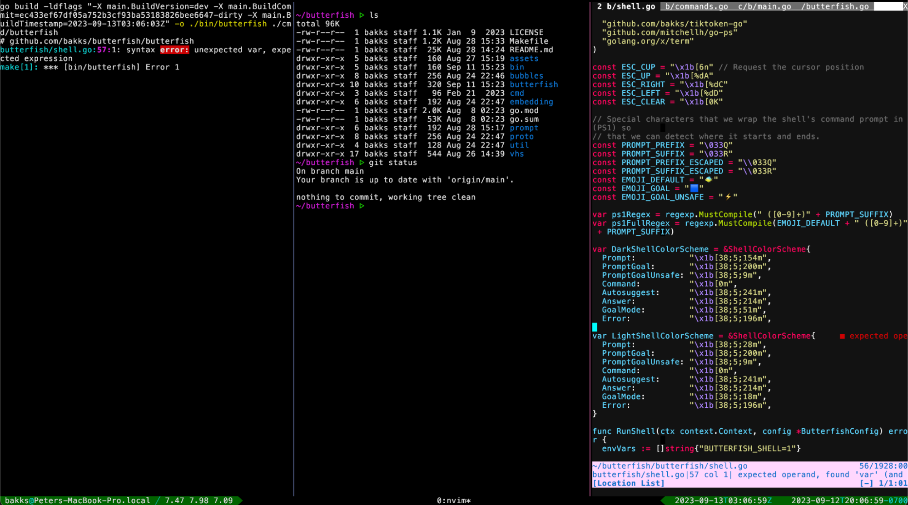
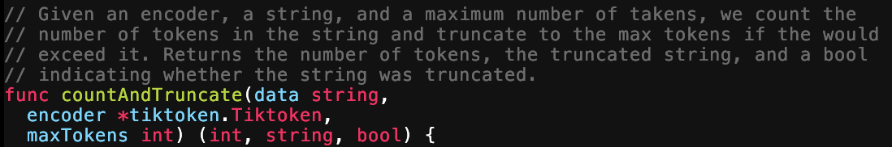
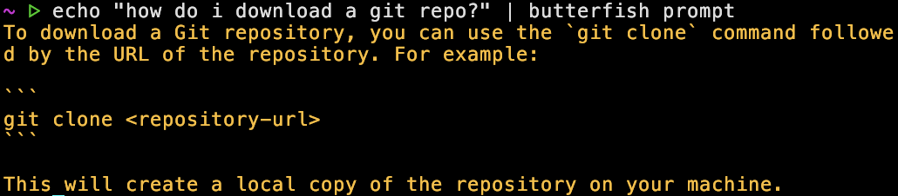
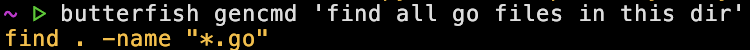
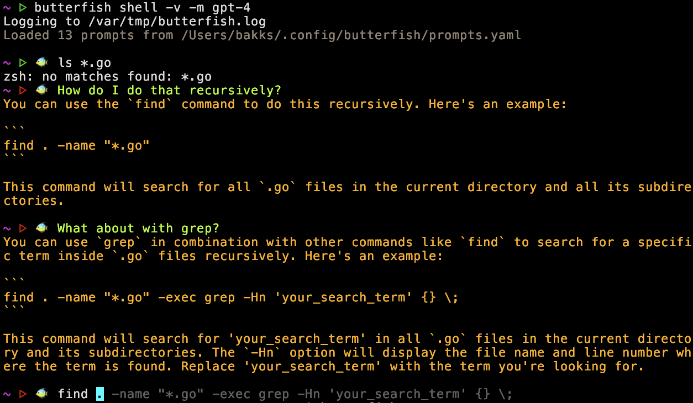
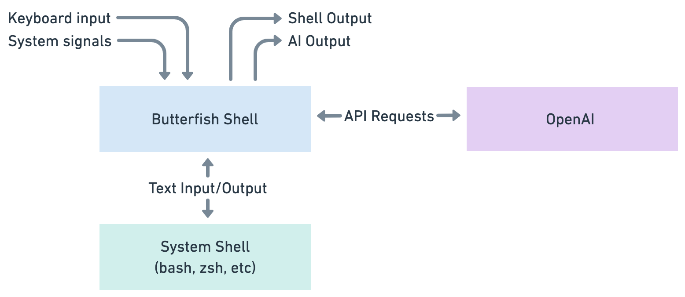
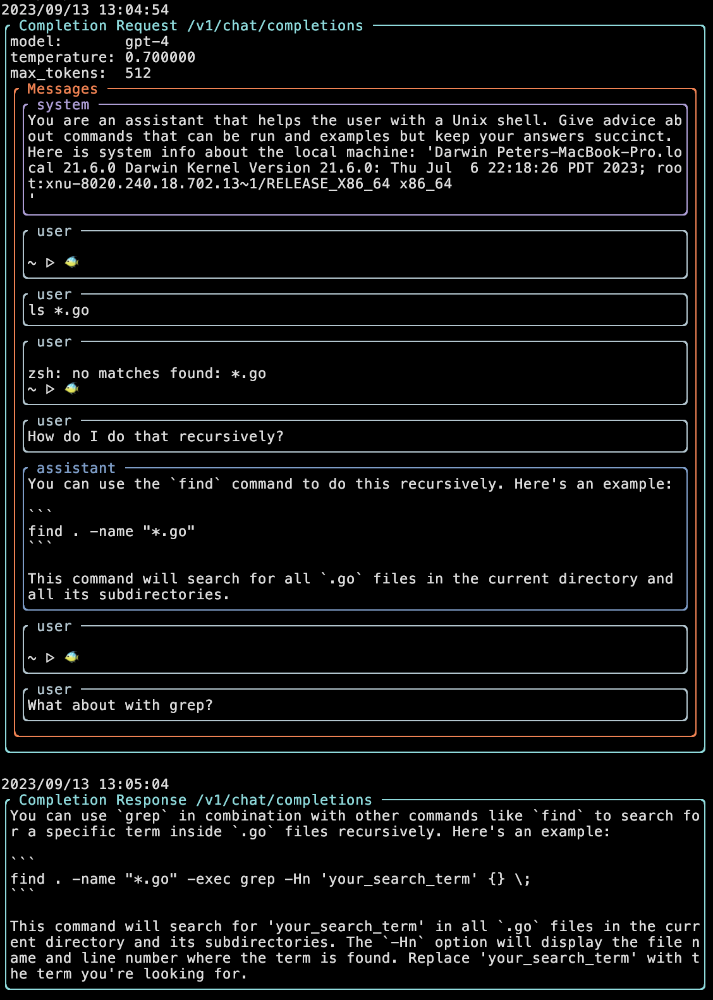
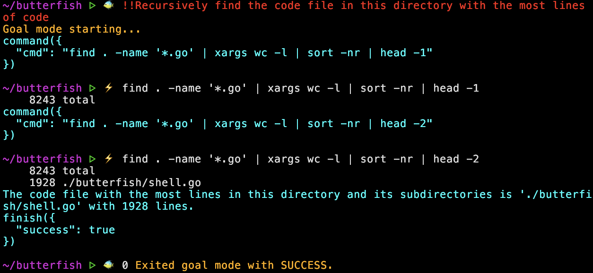
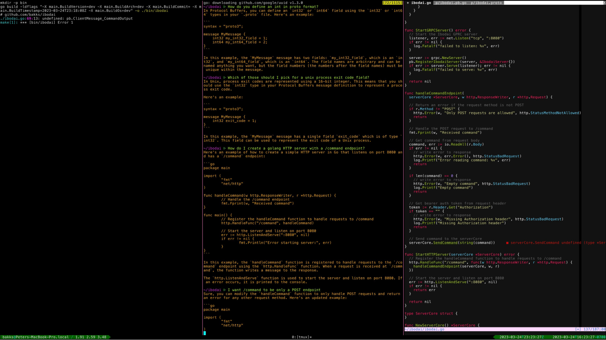

How do you add AI capabilities to software products? LLMs provide magical new capabilities but it’s hard to gracefully augment our existing stuff. Should you slap an LLM chat box on your website and call it a day? Perhaps not.
A few months ago I began a project to leverage LLMs for command line tasks adjacent to software development and ultimately narrowed on a specific pattern that felt right for this context. The project became Butterfish, a command-line tool that adds AI prompting to the bash and zsh shells. This journey is (I hope) an interesting story in itself while being more broadly useful if you’re contemplating AI-enabled product design.
Here you see a glimpse of the final product: a shell where you can prompt ChatGPT from the command line and the AI sees your shell history, enabling context-sensitive prompts like “what does that error mean?”. Download and try it!
First some background: I do software development mostly from the terminal. You understand, I’m a serious engineer, unlike these VS Code neophytes with their point-and-click tools. Anyway, my usual setup looks like this:

So this is the environment, let’s do AI or something. How can we use LLMs to go faster?
There is a vim plugin for Github Copilot, which provides magical autocomplete for code. This tends to work best in a very local area of the code, for example if you define a function signature, define a comment about what you are doing, and if the interfaces/functions/variables you want to use are immediately above that function. For example:
In this context Copilot might write the whole function for you, or at least get close. Completely amazing.
A couple problems here:
The scene is set, now let’s experiment to see where LLMs can help in this environment.
First let’s get basic prompting working, i.e. type in a prompt on the command line, send that to OpenAI, stream the response back. You can do “butterfish prompt ‘is this thing working?’” and you can even pipe into that command like “echo ‘testing’ | butterfish prompt’”. Now I can prompt directly from a tmux pane!
A few drawbacks are immediately obvious: often the model is returning a shell command, but then I need to type the command myself. Also, if the previous response is close to what I want there isn’t a good way to ask for refinement.
Let’s define more specific functionality: “butterfish summarize [file]”, “butterfish gencmd [prompt]”. Maybe the right way to attack these problems is a suite of tools.
The summarize functionality boils down the semantic information in a text file to something shorter. If the file is longer than the model’s context window, things get harder; it chunks the file, gets a list of facts from each chunk, then summarizes that in a rollup, with a predictable degradation in quality when it has to decide which facts are most important.
The gencmd command generates only a runnable shell command given a prompt of what you want to do. This is pipeable, e.g. you could pipe it to “bash” and execute immediately, but you probably only want to do that in certain cases.
Summarize and Gencmd are useful but you have to remember they exist, they have the same problems as simple prompting: often you want to iterate on a thought, and when you do that the model should be able to see what it gave you before.
Let’s play with embeddings. A lot of AI applications let you search over your files/data or “chat with your data”, using embeddings to search over your data and then returning you specific chunks right when you need them. This is usually backed by a vector store, i.e. you chunk your data, embed it, put it in the vector db, search it later. But it turns out that unless you have a ton of vectors, like maybe in the hundreds of thousands, a vector db is overkill to some degree. So my next experiment was to write tools to create embeddings over local files, then cache those embeddings to disk, so that you could search them later. For example you can run “butterfish index ./mydir” to create embeddings of all text files in that directory.
A few lessons: first, embeddings are not magic! This is just a new strategy for the old problem of text search, and text search is only good when you tune it a lot. Next, embeddings over code demand a different model than over text, otherwise they’re just not that great. So we ended up with some nice tools for searching local files, but there’s nothing super useful here.
Let’s review: we’re trying to use AI more effectively from the command line, and we have a few tools we can use. They have some drawbacks: when they give output it’s hard to immediately use it, and you can’t give feedback, you have to re-ask the question. It’s annoying to run a specific command (i.e. “butterfish prompt ‘[prompt]’”) every time you want to talk to the AI.
Time for a new theory: maybe we should add AI to the shell itself. Here are the features we want:
What does this theory look like when implemented?
Here’s an example of using butterfish shell, it demonstrates several features of this pattern:
butterfish shell -v -m gpt-4 – This starts Butterfish Shell using GPT-4 as the prompting model, notice that when you run this the command line prompt (“~ >”) looks the same except for the fish now swimming in it.ls *.go – this is just a normal shell command.How do I do that recursively? – with this prompt the LLM is interpreting the previous command and error.What about with grep? – now we’re iterating on a previous LLM answer.find … – autocomplete has kicked in and is making a suggestion based on recent history, in this context Tab would apply the autocomplete.Of all the things I tried this was the one pattern that worked magically, exceptionally well. We’ve stopped activating the LLM in isolation, we’ve blended it into an existing workflow and it’s able to see the things that you see, enabling you to talk to it in context (e.g. “what does that error mean?”). This feels like you want AI to feel: an easy, handy support system.
Maybe this is true of all software products, but here’s my takeaway: figuring out the right context, the golden pattern, for AI in your application is 100x better than a naive integration. You will know it when you see it.
We want to quickly enter prompting mode when the user is at the command line, and we need to be able to keep track of shell input and output. How can we build this? Potential implementation strategies:
I went with that last option and wrote a “shell wrapper” that you run with the command “butterfish shell”. How does this work?

So Butterfish Shell can see the child shell’s i/o and do intelligent things. For example, this architecture enables AI-powered autocomplete by handling it within the Butterfish Shell component, until the user applies it, and it’s then sent to the System Shell. This architecture also means that you don’t have to change your existing bash or zsh setup, and hotkeys like Ctrl-R continue to work because we’re just forwarding on the System Shell’s i/o.
This pattern requires keeping track of shell history, including your commands, the command output, the LLM prompts, and the LLM output. The ChatGPT API models context as a history of a conversation between a human role and an assistant role, this API matches our shell history concept fairly well. Perhaps an insight here is that the model can effectively interpret another type of history (e.g. shell i/o) as part of the conversation. Here’s a debug view of Butterfish, showing roughly what an API request and response looks like.
Note several things: the instructional system message to control LLM style and tone, the “user” and “assistant” message types that record a history between you and the LLM, and finally the fact that the shell history itself is passed as a user message.
That’s Butterfish Shell – I hope an interesting story! Download it here. From here on I’ll discuss ideas I took away from it that may be more broadly applicable to other AI products.
Let's say you have an existing product and you want to add AI, what do you do? Here’s a mental model for LLM integration: “there’s someone else in the room”.
Previously the room had the app and the user in it, now you’re adding another ‘person’. What does that person know? Does it see everything the user sees? What happens when that person says something? When do you hand over control to the person, when do they give it back? Maybe this is terribly abstract, but when writing Butterfish it was helpful to think of the AI’s role as “someone looking over my shoulder”.
If you write software with LLMs you’ll quickly encounter “prompt engineering”, i.e. constructing your prompt to maximize the quality of the model’s output. Adding a clause like “think step by step in your answer” might make a huge difference. You may also want to include context in your prompt like the chat history, a document, search results, etc. In Butterfish this is the shell history.
This context is part of the prompt, but engineering that context, such as searching a vector store, is distinct enough that I think of it as its own problem. This “context engineering” is the difference in what the LLM knows outside of its training data, and may be the hard part of building LLM applications. If you’re generating code that should go inside your codebase, for example, it’s critically important to give the model the right context in terms of what the rest of your code looks like, what libraries and interfaces it should use, etc. The critical constraint, of course, is the model’s context window size. If you can’t hand over everything in the context, you need to prioritize aggressively.
Some reasons Butterfish works well:
Here’s an example: we try to run a program, we see an error, we print the file, then we ask a question about it all (“why did that code produce that error”). Printing the file puts the file in the context, in other words the user is implicitly engineering the LLM context in a way that feels natural. Of course this doesn’t work the same way if the code is thousands of lines long, but that’s natural in the sense that if the text doesn’t fit on a single terminal screen then it also doesn’t fit into LLM context.
Butterfish includes an agentic mode that allows the LLM to generate and execute shell commands in pursuit of a goal that you give it. You activate this mode by starting a command with a capital letter, for example “!Find the largest file in this directory”. You can let it execute commands without confirmation by prefixing with “!!” instead of “!”.
It’s really cool when this strategy works, and when it doesn’t work it has yet to delete all my local files. If the model suggests a command that doesn’t work, it will iterate on that command to find a new one, that’s pretty cool.
Ultimately, however, the agent strategy tends to go down the wrong path, or get stuck, and isn’t nearly as effective as you would want. This is a theme with other LLM applications, I have yet to see an agent product I would trust.
Building agents is hard because the LLM doesn’t retain memory about what works outside of immediate context and it’s very hard to isolate specific possible steps in a chain of agent steps that you can then train on, the whole point is to give the LLM flexibility. What do we need to make agents work well? Perhaps some just-in-time memory about prior attempts to meet goals. Perhaps a state machine concept, where states can be defined and actions within those states can be isolated and trained on. I’m not sure, but it feels like there’s something missing here.
One thing that does work well is LLM tool use, for example OpenAI functions. In this pattern you hand the model a list of tools/functions it can use when you prompt. This mostly solves the problem of getting structured output from LLMs, but even more than that the function selection is impressive. In other words, if you give the model a list of specific possible actions, it’s good at picking the right action. Butterfish uses functions to drive the agent mode, i.e. the model can choose between running a command, asking for clarification, or exiting, and this strategy works well (it’s the what command to run that is hard). I’ll definitely use the function strategy in the future.
When I started writing Butterfish I wanted to experiment with using LLMs to work with software projects. If you have local code files, and a command line tool to call LLMs, you should be able to write and edit all your code that way, right? It turns out that doing software engineering purely with LLMs is a context engineering problem, plus an agent problem, plus requires subtle reasoning that is often outside the capabilities of current models. So ultimately I narrowed to focus on the command line problem set rather than worrying about tackling the overall software engineering problem.
But I’m quite bullish on this space in general. In theory, software-focused agents should be easier to develop than other verticals because you can get programmatic feedback on actions. If the code is broken you’ll (probably) get an error! This should make it possible to automatically build training sets and iterate towards more and more capable software engineering models.
In the immediate term, the approach of Cursor and Sourcegraph Cody seem to be best, the strategy being to closely support the software developer rather than replacing them.
The most common feature request for Butterfish is to use a local model rather than OpenAI. A local model would allow prompting without internet and avoid transmitting potentially sensitive data to OpenAI. I’ve considered and experimented with local models but held off because of deployment complexity and because I've tuned the prompts carefully on GPT-3.5/4. I'd rather deliver a narrower product that works great than an infinitely pluggable thing that works just ok.
I value deployment simplicity highly. You should be able to install Butterfish with a single command, configuration should be easy. While there are now many pathways to deploy open source models like Llama 2 locally, I haven’t yet seen anything that easily gives you an optimal install and configuration on both MacOS and Linux. An ideal solution would be accessible to other processes via shared library and efficiently exploit local GPUs or the Apple Neural Engine with an model sized for local hardware. Someone should build this!
My new coding environment is shell/Butterfish, vim, and a build in 3 separate tmux panes. I haven’t yet obviated myself as human programmer but perhaps that’s around the corner.
I’ve found Butterfish to be super useful for my own purposes, I’ve open sourced it with the hope that others might find it useful as well. Try it and send feedback!
